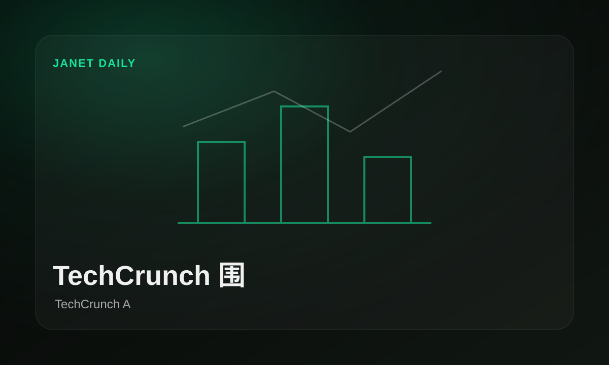
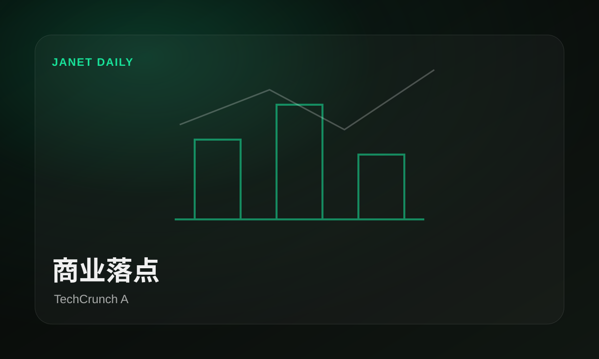

马斯克与 OpenAI 诉讼，信任成核心问题
原文：Why trust is a big question at the Elon Musk-OpenAI trialTechCrunch把马斯克与 OpenAI 的诉讼焦点放在“谁能被信任”上，这不是普通法务新闻，而是 AI 公司治理和商业承诺的压力测试。
这场官司真正吵的不是情绪，是 AI 公司说过的话还能不能算数。
原文今天最值得看的不是热闹数量，而是TechCrunch AI、The Verge AI把产品落点推到了台前：谁在抢入口，谁在补工具，谁还只是发声明，一眼分清。
今天窗口里，TechCrunch AI、The Verge AI把产品和研究摆在台面上：不是每条都惊天动地，但它们共同说明，模型能力正在往开发、开源和研究的日常环节里挤。

TechCrunch把马斯克与 OpenAI 的诉讼焦点放在“谁能被信任”上，这不是普通法务新闻，而是 AI 公司治理和商业承诺的压力测试。
马斯克与 OpenAI 诉讼，信任成核心问题 · TechCrunch AI
商业落点TechCrunch把汽车行业的 AI 竞争指向人才和能力储备，真正的分水岭可能不是谁会宣传，而是谁能把 AI 塞进研发、制造和服务链路。
汽车业开始抢 AI 技能 · TechCrunch AI从TechCrunch报道看，Siri 改版据称会加入聊天自动清除，重点不是又多一个聊天框，而是 AI 助手如何处理隐私、留痕和默认记忆。
TechCrunch记录到校园场景里的 AI 叙事开始遇到反弹：听众不只想听“AI 会改变一切”，他们更在意具体代价、就业压力和真实帮助。
从The Verge报道看，Siri 改版据称会加入聊天自动清除，重点不是又多一个聊天框，而是 AI 助手如何处理隐私、留痕和默认记忆。
The Verge提到得来速聊天机器人，说明 AI 客服正在进入更嘈杂、更高压的真实服务场景，接下来考验的是稳定性、纠错和人工接管。
The Verge记录到校园场景里的 AI 叙事开始遇到反弹：听众不只想听“AI 会改变一切”，他们更在意具体代价、就业压力和真实帮助。
TechCrunch把马斯克与 OpenAI 的诉讼焦点放在“谁能被信任”上，这不是普通法务新闻，而是 AI 公司治理和商业承诺的压力测试。
这场官司真正吵的不是情绪，是 AI 公司说过的话还能不能算数。
原文从The Verge报道看，Siri 改版据称会加入聊天自动清除，重点不是又多一个聊天框，而是 AI 助手如何处理隐私、留痕和默认记忆。
The Verge这次看点不只是 Siri 变聪明，而是“聊完要不要留下”也成了产品选择。
原文The Verge提到得来速聊天机器人，说明 AI 客服正在进入更嘈杂、更高压的真实服务场景，接下来考验的是稳定性、纠错和人工接管。
点餐窗口不是实验室，机器人在这里出错，后面排队的人会立刻投票。
原文TechCrunch记录到校园场景里的 AI 叙事开始遇到反弹：听众不只想听“AI 会改变一切”，他们更在意具体代价、就业压力和真实帮助。
TechCrunch这里的反应不是“不懂 AI”，而是听够了没有落点的 AI 鸡血。
原文TechCrunch把汽车行业的 AI 竞争指向人才和能力储备，真正的分水岭可能不是谁会宣传，而是谁能把 AI 塞进研发、制造和服务链路。
车圈的 AI 竞赛不只在座舱屏幕上，也在招聘和组织结构里。
原文The Verge记录到校园场景里的 AI 叙事开始遇到反弹：听众不只想听“AI 会改变一切”，他们更在意具体代价、就业压力和真实帮助。
The Verge这里的反应不是“不懂 AI”，而是听够了没有落点的 AI 鸡血。
原文